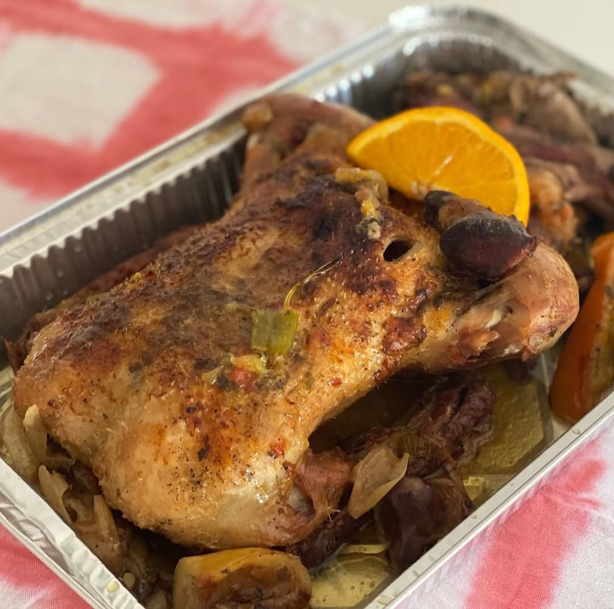
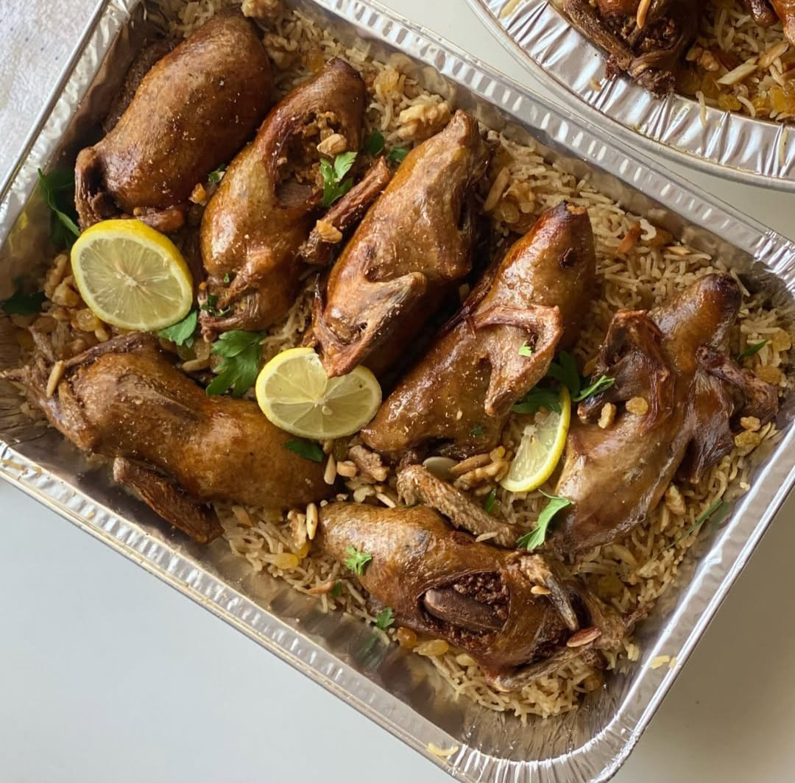
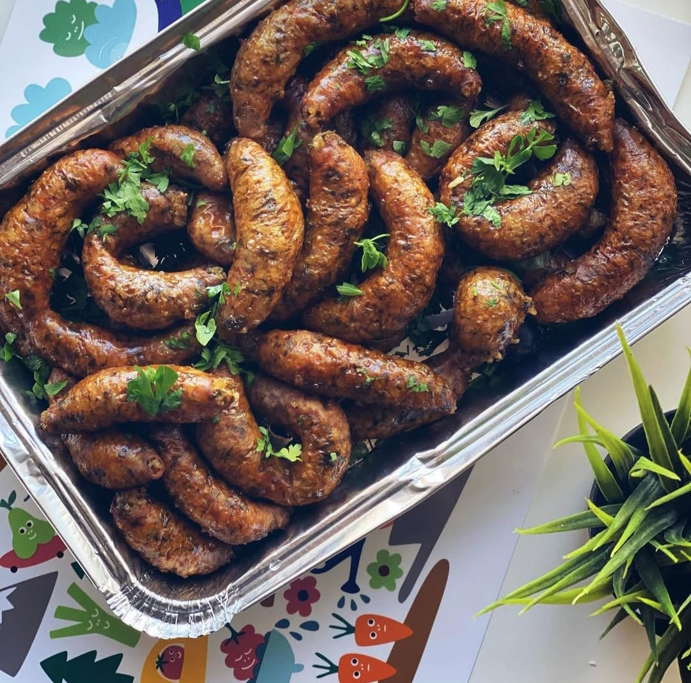
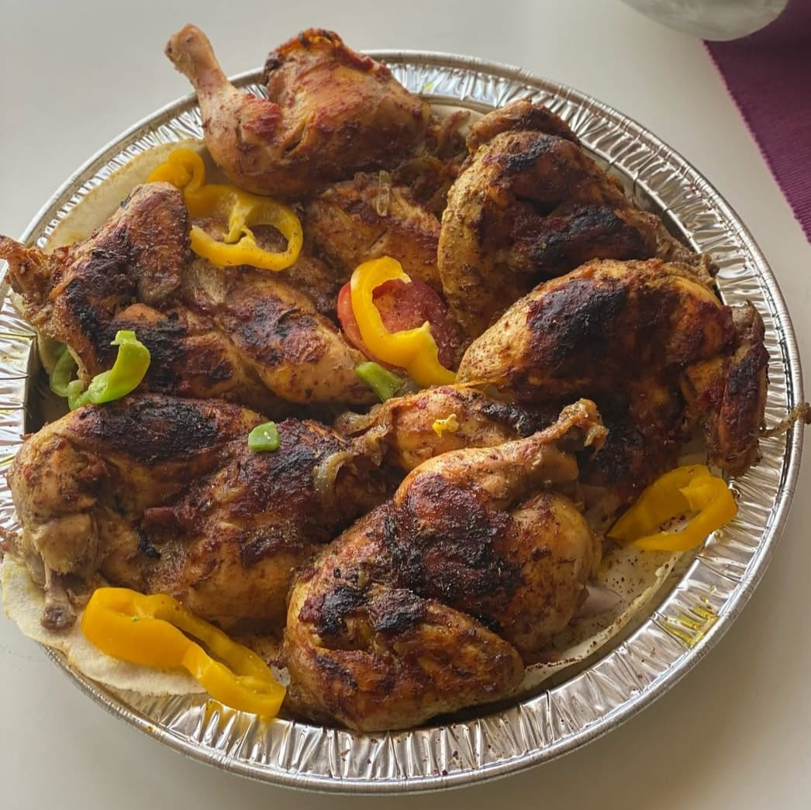

بطة مشوية بالبرتقال والخضار
مكونات الوجبة :
- دجاجة كاملة (مغسولة ومجففة جيدًا)
- ملعقة كبيرة زيت زيتون أو زبدة لدهن الجلد
- عصير نصف ليمونة لإضفاء نكهة منعشة
- ملعقة صغيرة ملح (أو حسب الرغبة)
- نصف ملعقة صغيرة فلفل أسود
- ملعقة صغيرة بابريكا لإعطاء لون جميل
- ملعقة صغيرة زعتر مجفف أو أي توابل أخرى تفضلها
- ثوم مهروس (اختياري، لإضافة نكهة قوية)
- قطع جزر وبصل (لإضافتها إلى الصينية حول الدجاج)
- شريحة برتقال أو ليمون لوضعها على سطح الدجاج لمزيد من النكهة

طريقة التحضير :
حمام محشي بالأرز
مكونات الوجبة :
- الحمام: 4 حمامات منظفة جيدًا
- الأرز: كوب ونصف أرز مغسول ومصفى
- البصل: بصلة كبيرة مفرومة ناعمًا
- السمنة أو الزبدة: 2 ملعقة كبيرة
- التوابل: ملح، فلفل أسود، بهارات مشكلة، قرفة، ورشة جوزة الطيب (حسب الرغبة)
- المكسرات: صنوبر أو لوز محمص (اختياري)
- الماء أو المرق: كمية كافية لسلق الحمام
- أوراق الغار وحبهان: لإضافة نكهة أثناء السلق
- الليمون والبقدونس: للتزيين

طريقة التحضير :
فطائر محشوة
مكونات الوجبة :
- 1 كيلو ممبار (ينظف جيدًا)
- 2 كوب أرز مصري (مغسول ومنقوع)
- 1 بصلة كبيرة (مفرومة)
- 4 فصوص ثوم (مفروم)
- ½ كوب بقدونس مفروم
- ½ كوب كزبرة مفرومة
- ¼ كوب شبت مفروم (اختياري)
- 2 حبة طماطم (مبشورة)
- 1 ملعقة كبيرة معجون طماطم
- 1 ملعقة صغيرة كمون
- 1 ملعقة صغيرة كزبرة جافة
- 1 ملعقة صغيرة شطة (اختياري)
- ملح وفلفل أسود حسب الرغبة
- زيت نباتي للقلي

محشي كوسا وباذنجان وفلفل رومي
مكونات الوجبة :
- قطع دجاج (يمكن أن تكون صدور أو أفخاذ)
- ملعقة صغيرة ملح
- ملعقة صغيرة فلفل أسود
- ملعقة صغيرة بابريكا
- ملعقة صغيرة ثوم بودرة
- ملعقة صغيرة زيت زيتون
- شرائح فلفل أصفر وأخضر للتزيين

طريقة التحضير :